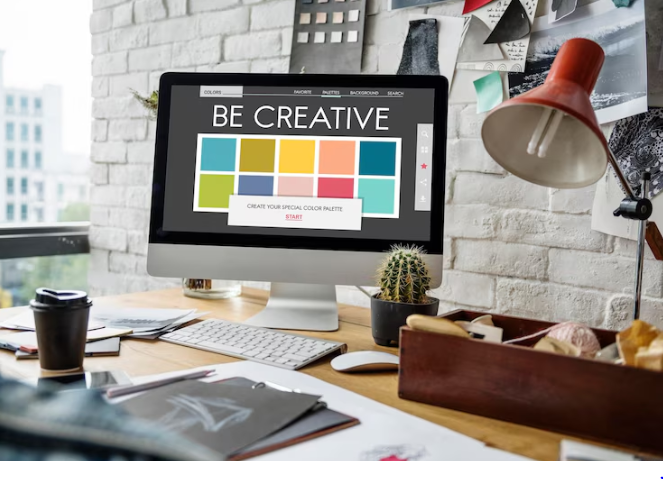
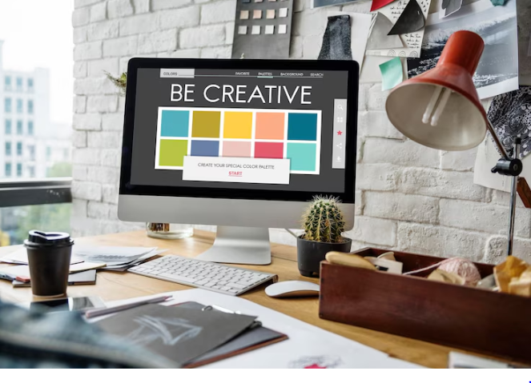
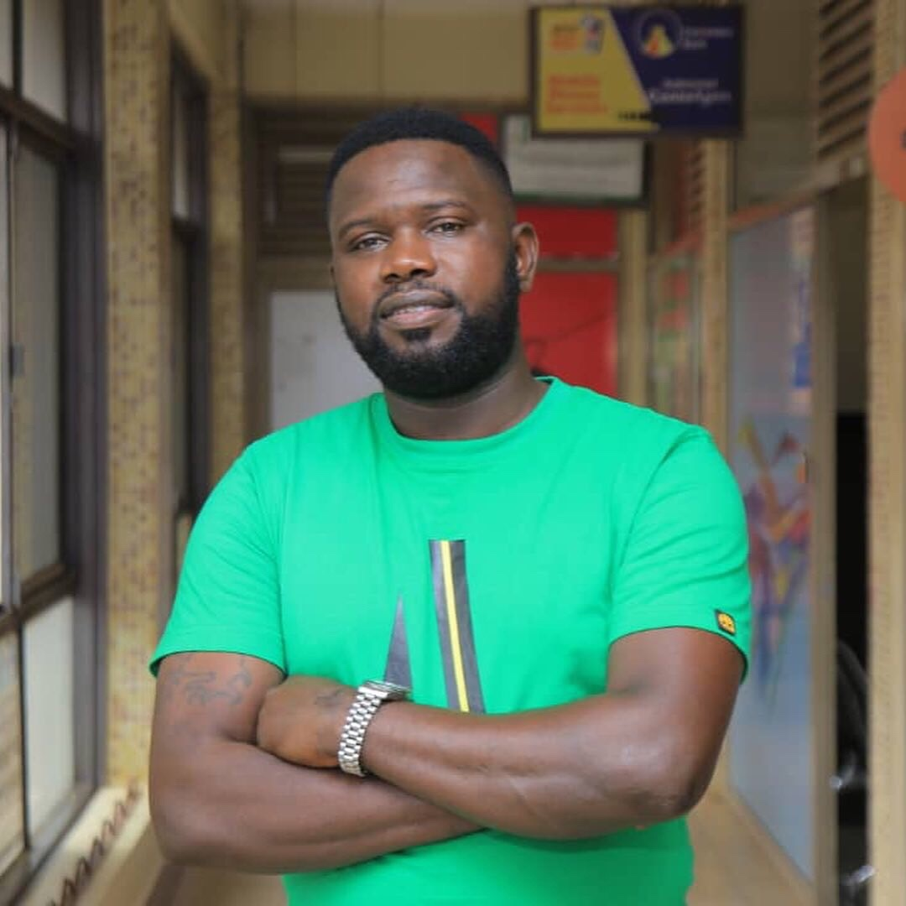

Welcome to Our Site

Welcome to our website, a comprehensive resource and portfolio for web and graphics design. Explore our featured projects, latest updates, and navigate through the various sections to learn more about our work and services.

 

Stay updated with the latest trends and best practices in web design. We're here to inspire and educate the design community with our expertise and passion for creativity.
About Me

My Profile
I'm John Baptist Byaruhanga, a dedicated web and graphic designer passionate about creating visually compelling and user-friendly digital experiences. I'm currently pursing a software development degree from BYUI Utah.